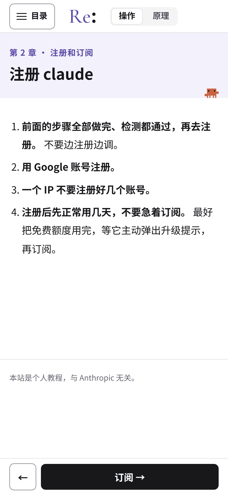

<!doctype html>
<html lang="zh-CN">
<head>
<meta charset="utf-8">
<title>封面和群头像</title>
<!-- 用法：render.mjs 打开 cover.html?v=<版式>，按 #stage 的尺寸截图。版式见下面的 LAYOUTS -->
<style>
  @font-face { font-family: 'Heavy'; src: url('../../.cache/fonts/SourceHanSansCN-Heavy.otf'); }
  :root { --accent: #5b4ba8; --accent-soft: #f3f1fb; --text: #18181b; --muted: #52525b; --border: #e4e4e7; }
  html, body { margin: 0; background: #fff; }
  #stage {
    position: relative; overflow: hidden; background: #fff; box-sizing: border-box;
    font-family: 'Noto Sans CJK SC', sans-serif; color: var(--text);
  }
  .col { position: absolute; top: 0; bottom: 0; display: flex; flex-direction: column; justify-content: center; }
  #stage::before { content: ''; position: absolute; left: 0; right: 0; top: 0; background: var(--accent-soft); height: var(--band, 0); }
  .logo, .eyebrow, .title, .sub, .url { position: relative; }
  /* 横版右侧：网站的手机截图 */
  .phone { position: absolute; box-sizing: border-box; border: 16px solid var(--text); border-radius: 64px; background: #fff; overflow: hidden; box-shadow: 0 30px 80px rgba(24, 24, 27, .16); }
  .phone img { display: block; width: 100%; }
  .logo img { display: block; }
  .eyebrow { color: var(--accent); font-weight: 700; }
  .title { font-family: 'Heavy', sans-serif; line-height: 1.18; letter-spacing: 2px; }
  .title .accent { color: var(--accent); }
  .sub { color: var(--muted); font-weight: 700; line-height: 1.45; }
  .url { font-family: 'Heavy', sans-serif; display: inline-block; align-self: flex-start; border: 4px solid var(--text); border-radius: 999px; }

  /* 群头像：正方形，QQ 会裁成圆形，内容放在中间的安全圆里 */
  #stage.avatar { display: flex; align-items: center; justify-content: center; }
  #stage.avatar.dark { background: var(--accent); }
  #stage.avatar.dark .logo { filter: brightness(0) invert(1); }
</style>
</head>
<body>
<div id="stage"></div>
<script>
const LOGO = '../../src/assets/logo/logo-zh.svg';
const MARK = '../../src/assets/logo/mark.svg';
// 每个版式：画布尺寸、左右留白、logo 宽度、各段文字的字号和间距；phone 是横版右侧手机截图的宽度
const LAYOUTS = {
  // 抖音竖版封面 3:4
  'douyin-3x4': { w: 1080, h: 1440, pad: 96, logo: 640, eyebrow: 44, title: 128, sub: 46, url: 50, gap: [56, 56, 40, 64] },
  // 抖音横版封面 4:3
  'douyin-4x3': { w: 1440, h: 1080, pad: 90, logo: 520, eyebrow: 36, title: 92, sub: 34, url: 38, gap: [36, 40, 28, 44], phone: 400 },
  // B 站封面 16:9。B 站把同一张图裁成 16:9（个人空间）和 4:3（首页推荐），4:3 会切掉左右各 240px，
  // 所以内容都放在中间 1440 宽的安全区里（safe 是安全区到画布边的距离）
  'bilibili-16x9': { w: 1920, h: 1080, safe: 240, pad: 70, logo: 480, eyebrow: 34, title: 86, sub: 32, url: 36, gap: [32, 36, 26, 40], phone: 380 },
};
const v = new URLSearchParams(location.search).get('v') || 'douyin-3x4';
const stage = document.getElementById('stage');

if (v.startsWith('avatar')) {
  // 群头像 640×640：浅色版白底紫字，深色版紫底白字
  Object.assign(stage.style, { width: '640px', height: '640px' });
  stage.className = 'avatar' + (v === 'avatar-dark' ? ' dark' : '');
  stage.innerHTML = `<div class="logo"></div>`;
} else {
  const L = LAYOUTS[v];
  Object.assign(stage.style, { width: L.w + 'px', height: L.h + 'px' });
  // 有手机截图的横版：文字在左，手机在右，手机比画布高，下沿出画
  const phoneW = L.phone || 0;
  const edge = (L.safe || 0) + L.pad;
  const phoneLeft = L.w - edge - phoneW;
  stage.innerHTML = `<div class="col" style="left:${edge}px;right:${phoneW ? L.w - phoneLeft + 50 : edge}px">
    <div class="logo" style="margin-bottom:${L.gap[0]}px"></div>
    <div class="eyebrow" style="font-size:${L.eyebrow}px;margin-bottom:${L.gap[1] * 1.6}px">分步教程 · 一页只做一步</div>
    <div class="title" style="font-size:${L.title}px;margin-bottom:${L.gap[2]}px">第一次订阅 Claude<br><span class="accent">只想一次成功</span></div>
    <div class="sub" style="font-size:${L.sub}px;margin-bottom:${L.gap[3]}px">别人踩过的坑，写成了一份照着做的教程</div>
    <div class="url" style="font-size:${L.url}px;padding:${L.url * 0.36}px ${L.url * 0.8}px">https://re0claude.us.ci/</div></div>`
    + (phoneW ? `<div class="phone" style="left:${phoneLeft}px;top:${L.h * 0.14}px;width:${phoneW}px;height:${phoneW * 2.3}px"></div>` : '');
  // 浅紫色带：从顶上铺到眉题下方
  const eb = stage.querySelector('.eyebrow');
  stage.style.setProperty('--band', eb.offsetTop + eb.offsetHeight + L.gap[1] * 0.8 + 'px');
}
</script>
</body>
</html>
